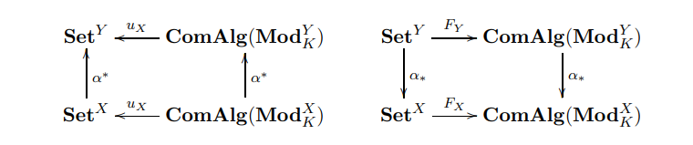

|
Bhavya Agrawalla I am Bhavya Agrawalla, second-year CS PhD student at CMU advised by Prof. Aviral Kumar. Previously I was a Math and CS undergrad at MIT (2021-24) and IISc Bangalore (2020 - 21). My research interests are in deep reinforcement learning and statistics. At MIT, I have been extremely lucky to work with-
During high school, I represented India at the International Mathematical Olympiad 2019 and won a silver medal. In free time, I like to play badminton and read. Email / CV / Google Scholar |

|
Publications and Preprints
|

|
floq: Training Critics via Flow-Matching for Scaling Compute in Value-Based RL
Bhavya Agrawalla, Michal Nauman, Khush Agrawal, Aviral Kumar Under Review at International Conference on Learning Representations (ICLR), 2026 arXiv A hallmark of modern large-scale machine learning techniques is the use of training objectives that provide dense supervision to intermediate computations, such as teacher forcing the next token in language models or denoising step-by-step in diffusion models. This enables models to learn complex functions in a generalizable manner. Motivated by this observation, we investigate the benefits of iterative computation for temporal difference (TD) methods in reinforcement learning (RL). Typically they represent value functions in a monolithic fashion, without iterative compute. We introduce floq (flow-matching Q-functions), an approach that parameterizes the Q-function using a velocity field and trains it using techniques from flow-matching, typically used in generative modeling. This velocity field underneath the flow is trained using a TD-learning objective, which bootstraps from values produced by a target velocity field, computed by running multiple steps of numerical integration. Crucially, floq allows for more fine-grained control and scaling of the Q-function capacity than monolithic architectures, by appropriately setting the number of integration steps. Across a suite of challenging offline RL benchmarks and online fine-tuning tasks, floq improves performance by nearly 1.8x. floq scales capacity far better than standard TD-learning architectures, highlighting the potential of iterative computation for value learning. |

|
Statistical Inference for Linear Functionals of Online Least-Squares SGD when t >= d^{1 + \delta}
Bhavya Agrawalla, Krishnakumar Balasubramaniam, Promit Ghosal IEEE Transactions On Information Theory, 2025 arXiv Stochastic Gradient Descent (SGD) has become a cornerstone method in modern data science. However, deploying SGD in high-stakes applications necessitates rigorous quantification of its inherent uncertainty. In this work, we establish \emph{non-asymptotic Berry--Esseen bounds} for linear functionals of online least-squares SGD, thereby providing a Gaussian Central Limit Theorem (CLT) in a \emph{growing-dimensional regime}. Existing approaches to high-dimensional inference for projection parameters, such as~\cite{chang2023inference}, rely on inverting empirical covariance matrices and require at least t>=d^{3/2} iterations to achieve finite-sample Berry--Esseen guarantees, rendering them computationally expensive and restrictive in the allowable dimensional scaling. In contrast, we show that a CLT holds for SGD iterates when the number of iterations grows as t>=d^{1 + \delta} for any \delta>0, significantly extending the dimensional regime permitted by prior works while improving computational efficiency. The proposed online SGD-based procedure operates in O(td) time and requires only O(d) memory, in contrast to the O(td^2 + d^3) runtime of covariance-inversion methods. To render the theory practically applicable, we further develop an \emph{online variance estimator} for the asymptotic variance appearing in the CLT and establish \emph{high-probability deviation bounds} for this estimator. Collectively, these results yield the first fully online and data-driven framework for constructing confidence intervals for SGD iterates in the near-optimal scaling regime t>=d^{1 + \delta}. |

|
DISeR: Designing Imaging Systems with Reinforcement Learning
Tzofi Klinghoffer, Kushagra Tiwary, Nikhil Behari, Bhavya Agrawalla, Ramesh Raskar International Conference on Computer Vision (ICCV), 2023 arXiv Imaging systems consist of cameras to encode visual information about the world and perception models to interpret this encoding. Cameras contain (1) illumination sources, (2) optical elements, and (3) sensors, while perception models use (4) algorithms. Directly searching over all combinations of these four building blocks to design an imaging system is challenging due to the size of the search space. Moreover, cameras and perception models are often designed independently, leading to sub-optimal task performance. In this paper, we formulate these four building blocks of imaging systems as a context-free grammar (CFG), which can be automatically searched over with a learned camera designer to jointly optimize the imaging system with task-specific perception models. By transforming the CFG to a state-action space, we then show how the camera designer can be implemented with reinforcement learning to intelligently search over the combinatorial space of possible imaging system configurations. We demonstrate our approach on two tasks, depth estimation and camera rig design for autonomous vehicles, showing that our method yields rigs that outperform industry-wide standards. We believe that our proposed approach is an important step towards automating imaging system design. |
|

|
Harrison homology and the Quillen cohomology of commutative monoids
Bhavya Agrawalla, Nasief Khlaif, Haynes Miller Semigroup Forum Journal, 2023 arXiv We observe that Beck modules for a commutative monoid are exactly modules over a graded commutative ring associated to the monoid. Under this identification, the Quillen cohomology of commutative monoids is a special case of Andre-Quillen cohomology for graded commutative rings, generalizing a result of Kurdiani and Pirashvili. To verify this we develop the necessary grading formalism. The partial cochain complex developed by Pierre Grillet appears as the start of a modification of the Harrison cochain complex suggested by Michael Barr. We show that Harrison and Quillen cohomology coincide rationally, and thereby establish a cochain complex computing the rational cohomology of a commutative monoid. |
|
|